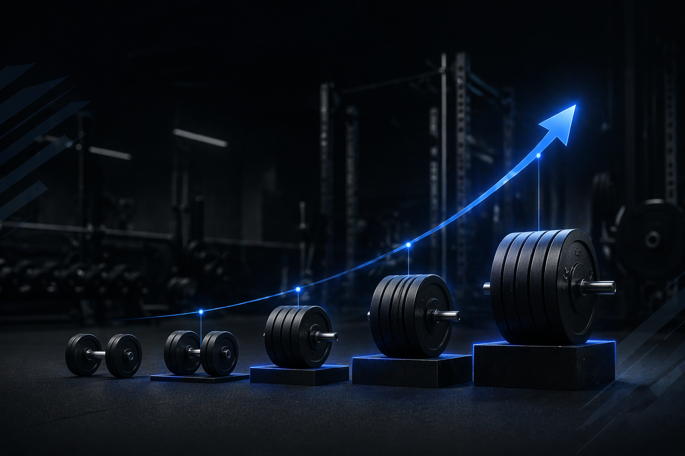

O QUE É

Você já teve a sensação de treinar pesado, mas depois de algumas semanas o seu corpo simplesmente estagnar? Isso acontece porque o nosso corpo é uma máquina de adaptação incrível. Se você levanta o mesmo peso, com o mesmo número de repetições e o mesmo tempo de descanso durante meses, o seu corpo se acostuma e entende que não precisa mais gastar energia para crescer ou ficar mais forte. É aqui que entra a Progressão de Carga.
De forma simples, a progressão de carga é o princípio fundamental da musculação e do treinamento de força. Ela consiste em aumentar gradativamente o estímulo e o desafio imposto aos seus músculos ao longo do tempo. Quando você exige mais do seu corpo do que ele está acostumado, você o obriga a se adaptar, construindo mais massa muscular e ganhando mais força.